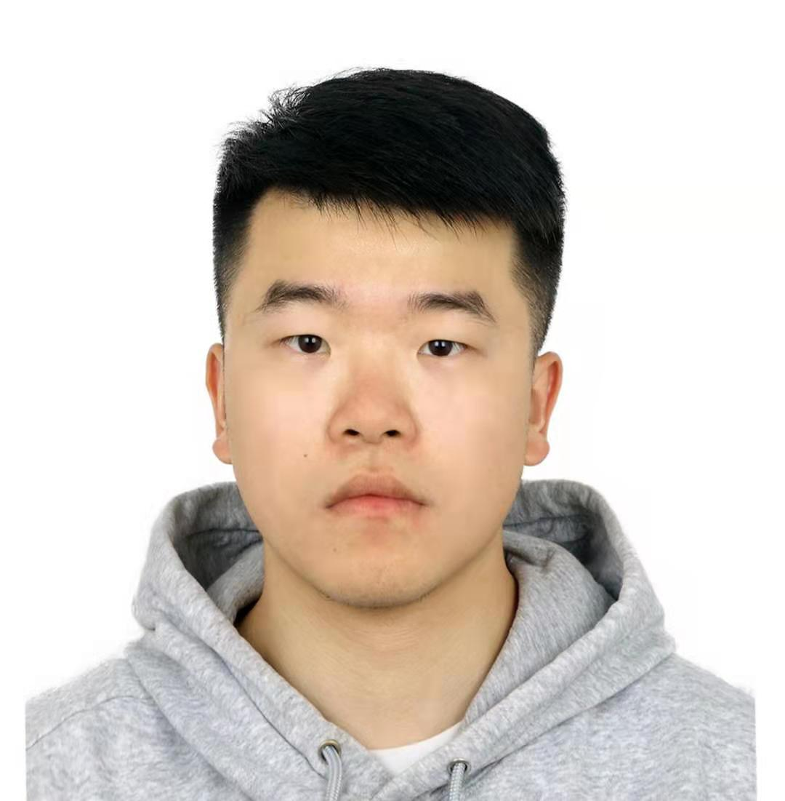
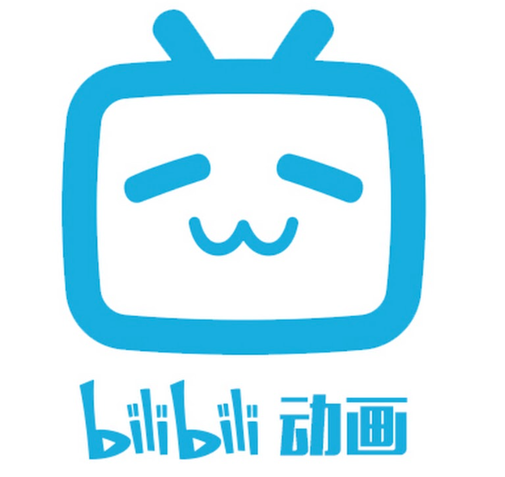
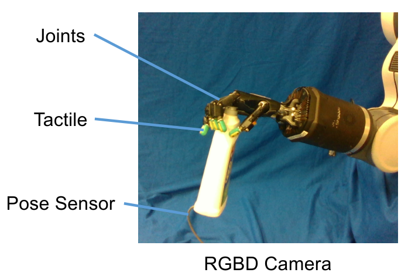
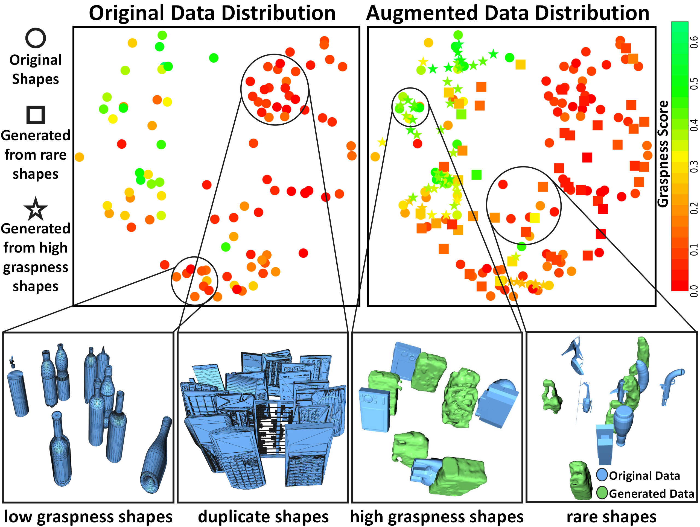
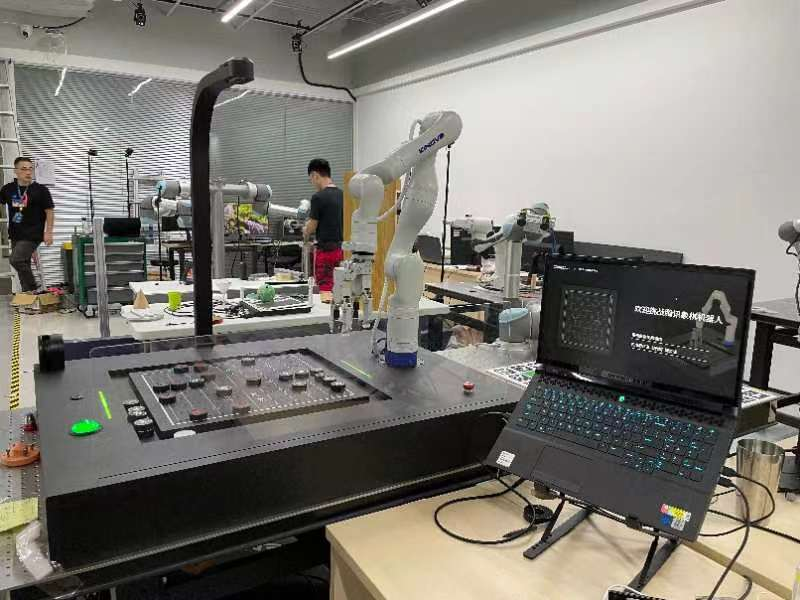
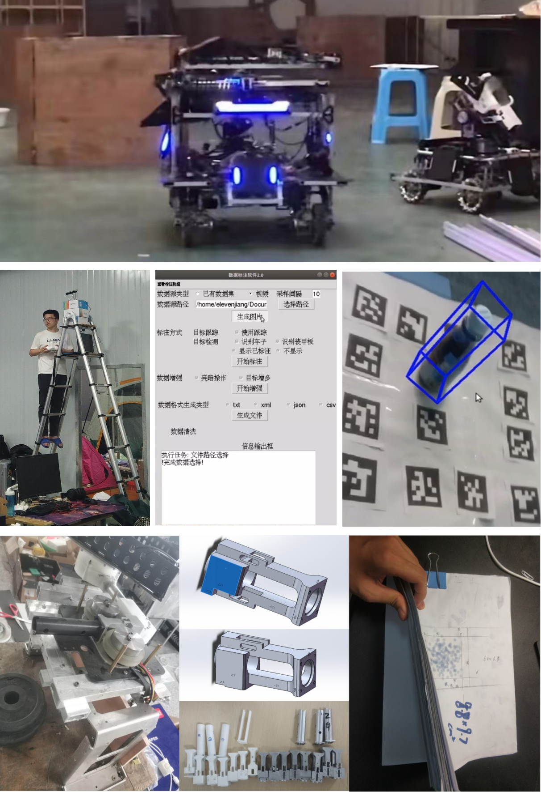

|  |
Junnan Jiang (蒋俊南)I am now a master student in Institute of Technology Sciences, Wuhan University. Advised by Prof. Miao Li. My research areas include robotic perception, grasping and manipulation. I obtained my bachelor's degree from School of Automation Engineering, University of Electronic Science and Technology of China (UESTC) in 2021.Email: elevenjiang8 [at] gmail [dot] com Github: https://github.com/elevenjiang1 Research Interests: Robotic Grasping, Computer Vision, Robotic Manipulation |
|
|
|
 | 中文版本个人简介: 蒋俊南个人简历.pdf |
|  | Grasping Dataset Augmentation [Project Website]
|
|  | Grasping Dataset Augmentation [pdf]
[video]
|
|  | Tencent RoboticsX Internship
|
|  | Robotmaster Competition [video]
[code]
|

©Junnan Jiang. All rights reserved